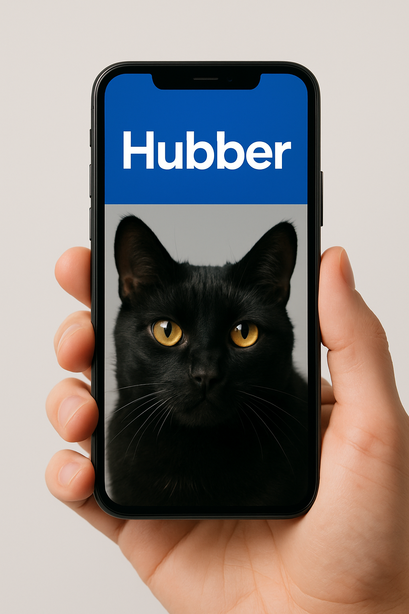

Проекти
Подивіться мої досвід і проекти, вказані в резюме:

Huuber – досконалий паспорт вашого хвостика
Розробка і запуск додатку для власників тварин Huuber, що збирає інформацію і зберігає дані у смартфоні. Результат: зручний функціонал і захист для вашої тварини.
Скрипти для сегментування клієнтської бази
Аналітичні скрипти на Python, для компаній, з процесом покращення маркетингу. Завдяки цим скриптам, вдалося сегментувати клієнтів за інтересами та підвищити конверсію на 20% у фокусних продуктах компанії.